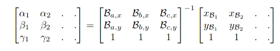

Теоретски чекори¶
Се избираат две слики - изворна и дестинациска¶
Најпрво треба да се изберат изворна слика(онаа чие што лице ќе биде исечено и вметнато) и дестинациска слика(онаа во која ќе биде вметнато лице). За да си го олесниме целиот процес најдобро е да избереме слики на кои што лицата се под сличен агол. Би било добро доколку сликите имаат слична боја и големина. Сето ова гарантира резултат на кој промената е непрепознатлива(секако доколку се извршат наредните чекори правилно).
Се користи dlib landmark детектор на двете слики¶
dlib претставува библиотека во Python која ќе ја искористиме за детекција на карактеристики на лице. Под ова подразбираме очи, веѓи, нос, уста и брада. Детектирањето на овие карактеристики претставува подмножество на проблемот наречен shape prediction. Овој проблем има за цел да прими влезна слика и да ја анализира за на крај да извлече клучни точки од посакуваната форма кои ни се од интерес. Детекцијата на карактеристики се состои од два дела: детекција на лице во самата влезна слика и детекција на клучната структура на лицето. Првиот чекор може да се постигне на многу начини. Можеме да ги искористиме вградените Haar каскади во OpenCV, однапред тренирани детектори или пак алгоритми базирани на длабоко учење. Кој начин и да го избереме потполно е сеедно. Она што е важно е да правилно да ги поставиме координатите x и y на лицето на сликата. Вториот чекор се постигнува преку голем број детектори чии методи главно се сведуваат на детекција на: усни, десна веѓа, лева веѓа, десно око, лево око, нос и брада. Детекторот кој е вграден во dlib библиотеката е имплементација од One Millisecond Face Alignment with an Ensemble of Regression Trees од Kazemi and Sullivan(2014). Овој метод започнува со истрениран сет од карактеристики на лице на слика. Овој сет и рачно правен со специфицирани координати x и y кои ја опкружуваат секоја од карактеристиките кои ги споменавме. Потоа се употребуваат приори односно веројатност на далечина помеѓу парови од влезни пиксели. Со помош на овие податоци, множество регресиски дрва се тренираат да ги проценат клучните точки и нивните позиции. Крајниот резултат е детектор на карактеристики на лице во real-time со висок квалитет на предикции и токму тоа се користи во денешните апликации.
Детекторот во dlib се состои од 68 (x,y) координати кои ги мапираат структурите на лицето. Овие анотации се дел од iBUG 300-W dataset-oт кој го користи оваа библиотека. Овој детектор враќа shape објект кој ги содржи 68-те координати од регионите. Детекторот во dlib се состои од 68 (x,y) координати кои ги мапираат структурите на лицето. Овие анотации се дел од iBUG 300-W dataset-oт кој го користи оваа библиотека. Овој детектор враќа shape објект кој ги содржи 68-те координати од регионите.
Се спојуваат точките од детекторот за да се формираат триаголници¶
Овој процес уште се нарекува и delaunay triangulation. Лицето се дели на посебни сегменти. Овој чекор е јадрото на целиот процес на замена на лице, бидејќи триаголниците од изворната слика подоцна ќе бидат заменети со соодветните триаголници од дестинациската слика. Зошто го делиме лицето на триаголници? Лицата на двете слики е многу веројатно дека имаат различна големина и перспектива. Доколку ги смениме овие две работи би ја изгубиле оригиналната пропорција. Наместо тоа го делиме лицето на помали триаголници со што ќе ја задржиме оригиналната пропорција но истовремено ќе имаме совпаѓање со карактеристиките на дестинациската слика(пример насмевката, затворени очи, отворени усни). За овој чекор да биде успешен потребно е да се искористи истата шема и на изворната и на дестинациската слика. Со други зборови, поврзувањето на точките треба да биде исто. Ова може да се постигне со numpy и функциите np.where() и np.extract_index_nparray() или пак со getTriangleList() од OpenCV. На крај од добиените индекси со np.array() се формираат триаголници.
Се прави екстракција на триаголниците¶
Ова е уште наречено face warping. Откако ја имаме триангулацијата на двете лица, најпрво ја земаме онаа од изворната слика и со помош на функции како np.float32(), np.getAffineTransform(), np.warpAffine() правиме екстракција на триаголниците. Притоа се земаат координатите на дестинациската слика со цел да се обрати внимание на големината и перпективата и да се обезбеди потполно усогласување на триаголниците. Во идеални услови ова би се одвивало на 3D информации меѓутоа најчесто нив ги немаме па 2D ги трансформираме во апроксимации на 3D информации на лице. Процесот на warping се постигнува преку Барицентрични координати претставени со [αi, βi, γi]^T каде што i ∈ [1,2,3..] - број на пиксел. Овие координати се пресметани за секој пиксел на сликата со помош на следната формула:

Се поставува изворната слика на дестинациската¶
Oткако ги имаме триаголниците исечени следно што треба да се направи е да се спојат заедно. Едноставно се прави реконструкција на лицата со помош на триангуларната шема, но овој пат се употребуваат триаголниците на кои им била извршена екстракција(warping). Oваа операција може да се изврши со помош на функции како np.zeros() и cv2.add(). На крајот од оваа операција имаме лице од изворната слика кое е спремно за замена. Се сече лицето од дестинациската слика за да се направи место за новото и со помош на cv2.fillConvexPoly() и cv2.add() го додаваме новото лице.
Се измазнува лицето за поверодостоен изглед¶
По завршувањето на чекор 5 промената на лицата е сосема видлива. Ова е заради различната текстура и истакнатите рабови. За да ја направиме транзицијата скоро па и невидлива мора да се погрижиме боите, текстурата и рабовите да одговараат на дестинациската слика. Ова лесно се постигнува со функцијата cv2.seamlessClone().